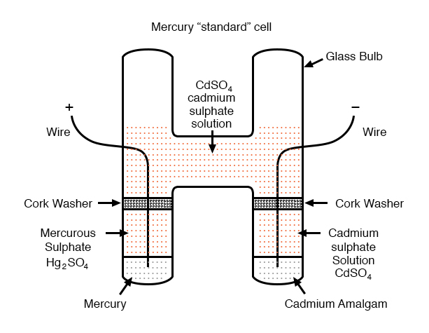
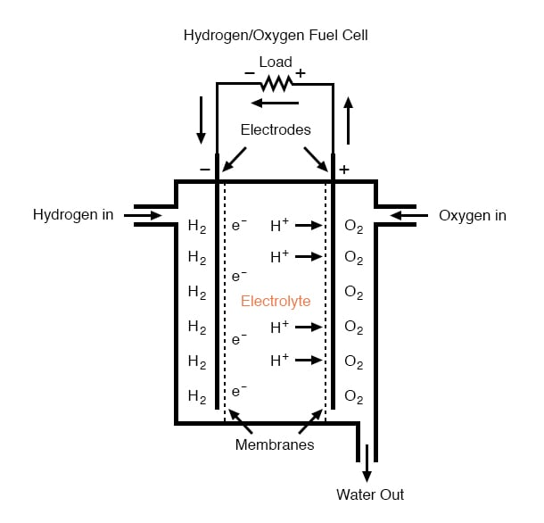
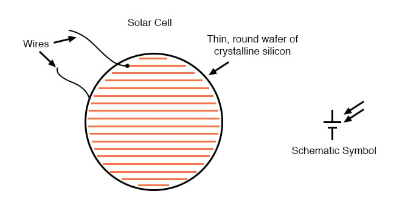

Back in the early days of electrical measurement technology, a special type of battery known as a mercury standard cell was popularly used as a voltage calibration standard. The output of a mercury cell was 1.0183 to 1.0194 volts DC (depending on the specific design of cell), and was extremely stable over time. Advertised drift was around 0.004 percent of rated voltage per year. Mercury standard cells were sometimes known as Weston cells or cadmium cells.

Unfortunately, mercury cells were rather intolerant of any current drain and could not even be measured with an analog voltmeter without compromising accuracy. Manufacturers typically called for no more than 0.1 mA of current through the cell, and even that figure was considered a momentary, or surge maximum! Consequently, standard cells could only be measured with a potentiometric (null-balance) device where current drain is almost zero. Short-circuiting a mercury cell was prohibited, and once short-circuited, the cell could never be relied upon again as a standard device.
Mercury standard cells were also susceptible to slight changes in voltage if physically or thermally disturbed. Two different types of mercury standard cells were developed for different calibration purposes: saturated and unsaturated. Saturated standard cells provided the greatest voltage stability over time, at the expense of thermal instability. In other words, their voltage drifted very little with the passage of time (just a few microvolts over the span of a decade!) but tended to vary with changes in temperature (tens of microvolts per degree Celsius). These cells functioned best in temperature-controlled laboratory environments where long-term stability is paramount. Unsaturated cells provided thermal stability at the expense of stability over time, the voltage remaining virtually constant with changes in temperature but decreasing steadily by about 100 µV every year. These cells functioned best as “field” calibration devices where the ambient temperature is not precisely controlled. Nominal voltage for a saturated cell was 1.0186 volts, and 1.019 volts for an unsaturated cell.
Modern semiconductor voltage (zener diode regulator) references have superseded standard cell batteries as laboratory and field voltage standards.
A fascinating device closely related to primary-cell batteries is the fuel cell, so-called because it harnesses the chemical reaction of combustion to generate an electric current. The process of chemical oxidation (oxygen ionically bonding with other elements) is capable of producing current flow between two electrodes just as well as any combination of metals and electrolytes. A fuel cell can be thought of as a battery with an externally supplied chemical energy source.

To date, the most successful fuel cells constructed are those which run on hydrogen and oxygen, although much research has been done on cells using hydrocarbon fuels. While “burning” hydrogen, a fuel cell’s only waste byproducts are water and a small amount of heat. When operating on carbon-containing fuels, carbon dioxide is also released as a byproduct. Because the operating temperature of modern fuel cells is far below that of normal combustion, no oxides of nitrogen (NOx) are formed, making it far less polluting, all other factors being equal.
The efficiency of energy conversion in a fuel cell from chemical to electrical far exceeds the theoretical Carnot efficiency limit of an internal-combustion engine, which is an exciting prospect for power generation and hybrid electric automobiles.
Another type of “battery” is the solar cell, a by-product of the semiconductor revolution in electronics. The photoelectric effect, whereby electrons are dislodged from atoms under the influence of light, has been known in physics for many decades, but it has only been with recent advances in semiconductor technology that a device existed capable of harnessing this effect to any practical degree. Conversion efficiencies for silicon solar cells are still quite low, but their benefits as power sources are legion: no moving parts, no noise, no waste products or pollution (aside from the manufacture of solar cells, which is still a fairly “dirty” industry), and indefinite life.

Specific cost of solar cell technology (dollars per kilowatt) is still very high, with little prospect of significant decrease barring some kind of revolutionary advance in technology. Unlike electronic components made from a semiconductor material, which can be made smaller and smaller with less scrap as a result of better quality control, a single solar cell still takes the same amount of ultra-pure silicon to make as it did thirty years ago. Superior quality control fails to yield the same production gain seen in the manufacture of chips and transistors (where isolated specks of impurity can ruin many microscopic circuits on one wafer of silicon). The same number of impure inclusions does little to impact the overall efficiency of a 3-inch solar cell.
Yet another type of special-purpose “battery” is the chemical detection cell. Simply put, these cells chemically react with specific substances in the air to create a voltage directly proportional to the concentration of that substance. A common application for a chemical detection cell is in the detection and measurement of oxygen concentration. Many portable oxygen analyzers have been designed around these small cells. Cell chemistry must be designed to match the specific substance(s) to be detected, and the cells do tend to “wear out,” as their electrode materials deplete or become contaminated with use.
REVIEW: